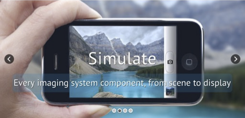

Foundations of Image Systems Engineering
A Guide to Image Formation, Sensors, and Perception
Brian A. Wandell ![]()

This is a draft version of Foundations of Image Systems Engineering. Content is actively evolving. Please send comments or corrections via GitHub Issues.
Last updated: September 8, 2025
1 Preface
Advances in image systems technology over the past few decades have profoundly reshaped our world. Cameras are now ubiquitous, carried and used by individuals daily. Security cameras are a common sight in public spaces, while medical facilities rely on a variety of imaging systems, from cameras to microscopes, for diagnosis and treatment. Modern automobiles incorporate numerous cameras for enhanced safety, both within the vehicle and for monitoring the surrounding environment. Furthermore, intelligent systems now interpret and generate images, demonstrating the growing sophistication of the field. Image systems engineering has transitioned from a specialized domain dominated by a few large corporations to a vast and intricate discipline with diverse applications.
This book aims to serve as a resource for both newcomers and seasoned professionals in the image systems engineering field. If you are new to image systems, I hope this text provides a clear and welcoming introduction. For those already experienced in imaging principles, I understand the challenge and excitement of keeping pace with the rapid technological evolution. This book is designed to serve as a useful reference for aspects of image systems outside your primary area of expertise.
A comprehensive understanding of an image system requires knowledge of the original signal (the scene) and the system’s parts: optics, sensors, image processing, and display. In many applications, such as color reproduction, knowledge of the characteristics of the human visual system are also crucial. This book introduces tools for simulating the performance of entire image systems, accounting for the properties of each individual component.
No textbook, even one designed for online updates, can fully capture every emerging technology. This book focuses on the enduring principles that underlie each component of an image system. We use contemporary technologies as illustrative examples, but our core objective is to elucidate the fundamental concepts that remain relevant despite technological advancements. Therefore, this book is titled: Foundations of Image Systems Engineering.
1.1 Why we wrote this book
Writing a textbook is a humbling experience. The Internet is filled with wonderful resources on many topics, and it is clear to any reasonable author that there are excellent online resources that cover some of the same material. So, why write a book at all? After twenty years of teaching this material, there are three main reasons we felt that writing a book is worth the considerable effort.
First, asking a student to use material distributed across the Internet produces an awkward learning experience. There can be many reasons to understand any of these topics, and the Internet resources often connect to some application. For example, image sensors might be used an example circuit design or material science. Optics might be explained to support biological microscopy. These different goals mean the ideas are explained in different ways. Each video or web page reference is written with a different voice and with different assumptions about the reader’s background and goals. This book aims to cover many topics in image systems engineering clearly, and importantly we want to explain the connections between a diverse array of technologies: measuring light, analyzing and designing optics and electronic image sensors, reproducing and displaying images, evaluating image quality, and using image data to make inferences about the world.
Second, we would like to help the reader apply these ideas in his or her work. The field of image systems engineering is sufficiently advanced that we can often compute from the input (scene) to the sensor data. Such simulations are enabling because the sensor data are the basis for the software that calculates a displayed image, or the algorithm that interprets the contents of the sensor data. Once the sensor data are known, the simulation is simply a matter of software that is easily shared. Predicting the sensor data from the light field in the scene is the foundation for further analysis. It is challenging to build a simulation of an image system, and we include software that the user can use and build upon. Specifically, we provide open-source software tools that we hope will make it easy for the reader to learn the principles and also to experiment with different hardware designs and post-processing algorithms. We illustrate the software by including code snippets throughout the book, including links to runnable scripts.
A third reason we write this book is to tell the story of image systems development. Images are very important to people, and a great many scientists and engineers have contributed ideas and technologies to acquire, render, and analyze images. We find the stories about the people who made discoveries, or invented technologies, to be fascinating. It is our hope that this book communicates how science and engineering are very human activities, involving personalities, ideas, conflicts, and friendships. Each year we teach the course, it feels like we are visiting with the people who developed the field and trying to understand what they were thinking at the time they made their contributions. Their stories have inspired us to work in image systems, and we hope some of our readers will be inspired, too.
1.2 Intellectual atmosphere
“The History of Science has suffered greatly from the use by teachers of second-hand material, and the consequent obliteration of the circumstances and the intellectual atmosphere in which the great discoveries of the past were made. A first-hand study is always instructive, and often . . . full of surprises.” (Ronald A. Fisher, in (Bennett 1955))
The great and influential statistician, Ronald Fisher, wrote this comment in 1936, though it was published much later by his estate. He believed that the experiments reported by Mendel included some improperly collected or analyzed data. He urges us to make the distinction between secondary reporting of findings and fully appreciating the context and intellectual mieliu of the original work. His commentary goes back to the history in a thoughtful way.
In my view, this is too much to ask of all teachers at all times. But it is not too much to ask of some of us. I should add that having now read several of Fisher’s original papers, and I am aware of his context including some views that I find entirely wrong (Project Muse). I find him and the world he represents a bit terrifying. But the importance of his contributions cannot be ignored.
This is an introductory book; each of the topics we cover can be studied in much greater depth. Throughout we provide the reader with external links to additional material, and in some cases we link to videos or text that explain an idea or a specific technology in greater detail. We hope you find that the value of this book is how it provides a consistent thread connecting the material at the foundations of image system. We hope this treatment is a good way to welcome people - whether students at school or a new team member in a commercial venture - to the exciting field of image systems. We hope you come away with tools to help you do your own work, and with some understanding of the people and ideas who have brought us this far.
1.3 History of image systems
1.3.1 The first images
Capturing and reproducing images has been exciting to people for a long time. In 1826, Joseph Nicéphore Niépce recorded the first film image, the “View from the Window at Le Gras”. He used the simplest optics: a pinhole (camera obscura). The color in the rendering was a consequence of the processing, and not an accurate representation of the scene itself. The spatial pattern was blurry, and barely interpretable - but it was inspirational. By 1840, Daguerre and then Talbot improved upon the film chemistry to enable the first commercially viable monochrome film.

By 1860 James Clerk Maxwell, in a masterful set of experiments and analyses, had quantified the key properties of human wavelength encoding. The principles and experiments from his work remain the foundations of modern color science. In collaboration with Thomas Sutton, Maxwell created the first color image. The image shows a colored Tartan ribbon. Maxwell went on to other matters - such as clarifying the connection between electricity and magnetism and showing that light is an electromagnetic wave. Wow. He performed the work on color in his mid-twenties. He died at 48 years of age, from the same type of cancer that took his mother.

1.3.2 Chemical imaging
In 1888 George Eastman invented and commercialized a camera that used rolls of film, enabling users to capture multiple images in a convenient, handheld device (Figure 1.3). To take a picture, shutter was opened and a lens formed an image on the film. The light changed the molecules in the film layers. For color film, there were multiple layers that differed in their wavelength sensitivity. Using chemical processes, the density of changes to the light-sensitive molecules could be measured and transferred to other media, such as prints. This process required a variety of chemical consumables, and the film could not be reused.
Eastman’s company, Kodak, controlled the consummables and methods for developing the roll of film into a series of pictures. Simplifying film development was critical for the widespread adoption, and the company’s control of the consummables made them a huge commercial success. Specialized labs processed the film and printed the image.
The delay between acquiring a picture and seeing it printed was usually days, or even weeks. Most of us would like to see the reproduction quickly. In 1948 Edwin Land created a chemical process for rapidly and developing the film on the spot, without going to a lab. His company, Polaroid, was also a huge success. Though, the quality of the Polaroid pictures was not equal to the quality of the pictures produced through the slower developing film produced by Kodak, Fuji, and Agfa.
People were passionate about their film cameras, and taking pictures was a common part of the family holiday and other special occasions. Images with Kodak film dominated the market and its brand was dominant. Film and the chemistry needed for film development required consumables, which made the technology expensive but also profitable. The ability to store the pictures, typically in photo-albums, was effortful but also became part of many family’s meaningful history. Editing pictures was difficult, and thus not a thing - apart from propagandists. The reproduction process included many nonlinear and adaptive steps, so that the ability to perform quantitative image analysis was very limited.
1.3.3 Electronic imaging
In 1970 Willard S. Boyle and George E. Smith at Bell Labs described an entirely different approach to image capture: an image sensor based on semiconductor technology (Boyle and Smith 1970; Boyle and Smith 1971). Their invention was called a charge-coupled device (CCD) based on Metal Oxide Semiconductor (MOS) circuitry. This light sensor revolutionized the field of imaging by enabling a new way of recording the electromagnetic radiation. There are no consumables when acquiring images with a solid-state sensor. The digital output of the sensor made it straightforward to integrate image acquisition with computers, which simplified storing, sharing, editing and analyzing images. A new business model was required 1.
At first, cameras based on CCDs replaced film in a few specialized applications: science and engineering for telescopes, and microscopes. The power requirements of CCDs, which was necessary for the method of reading out the data, made CCDs impractical for lightweight consumer cameras.
In 1993 this changed with Eric Fossum’s invention, at the Jet Propulsion Labs in Pasadena, of a solid state sensor based on CMOS. Shifting from MOS to CMOS enables the sensor to operate with much lower power requirements (Fossum 1993; Fossum et al. 1995). The first CMOS sensors were noisy and low resolution compared to the CCDs - which had a 25 year head-start! But engineering efforts led to commercial CMOS imagers with excellent sensitivity, low noise, and low power. By 2020 about 200 CMOS image sensors were built every second, and 6 billion were sold per year (Fossum 2023). Today, about 7 billion people carry a smartphone with one or more CMOS sensors, most of these people keep the camera in a pocket or purse throughout the day. These sensors record still and video digital image sequences. The raw image data are immediately transformed by computer algorithms, can be viewed immediately, stored in digital memory, and easily edited, shared or analyzed. We have gone from the first electronic imager to worldwide adoption in 50 years.
The sensor advances spurred the development of other hardware components of image systems. Many of these changes arose because the system needed to fit within the slim form factor of the phone. New optics were designed and new displays for viewing the image prior to capture also evolved. There were also many new digital image processing methods. Semiconductor imaging, integrated with a computational system, has become a massive industry of image processing applications.
1.4 Image systems and human vision
The important 20th century vision scientist, William Rushton, wrote - “You will need no words of mine to convince you how precious are your eyes.” Understanding how the eye encodes light, and how the brain interprets this encoding, is important for understanding many aspects of human behavior. Vision helps with many of life’s critical activities: moving from place to place, interpreting a facial expression, selecting food, reading a page.
When we design, build, or analyze image systems, we must account for how the signals are encoded and also how they will be used. For the very large application of consumer photography, it is essential to have a model that accounts for the system that will receive the image: the human visual system. As we shall see, many components of the image systems, including color filter arrays in sensor and image compression strategies in digital coding, are designed to account for the properties of the human visual system.
Image systems designed for other purposes, such as automotive or robotics sensor, also use a general principle that was proposed as the basis of human vision. The great 19th century scientist, Hermann von Helmholtz, proposed that the brain uses the image encoded by the eye to make an inference about the properties of the scene.
The general rule determining the ideas of vision that are formed whenever an impression is made on the eye, is that such objects are always imagined as being present in the field of vision as would have to be there in order to produce the same impression on the nervous mechanism (von Helmholtz 1925, Vol III, p. 2, Italics in the original)

This is an important principle for most modern image systems applications, as well. A robot uses image data to infer the location and orientation of a package on the table; a microscopist uses image data to infer the properties of cells in a biopsy. An autonomous vehicle uses image data to identify nearby traffic. A camera on an assembly line assessing part quality makes an inference between the materials and structures. The early pioneers in imaging systems developed the means of encoding the light - optics, film, sensors. The modern pioneers are expanding these technologies and coupling the acquired images with powerful new algorithms that interpret the encoding with respect to the specific properties of the scene.
1.5 About this book
This book is divided into three sections: image formation, sensor encoding, and image processing. Within each section we introduce the foundations, and then we illustrate these principles with implementations in different contexts that have different requirements. For example, the size requirements on optics differ between a cell phone and a telescope. The power requirements for an image sensor differ between an endoscope and a camera on an assembly line. For consumer photography applications the human visual system is an essential context, but not for a camera used to guide an automobile. The diversity of applications - and the ability to match the physics to these applications - make the field of image systems engineering interesting.
1.6 Image systems engineering at Stanford
The book is based on a course that Professor Brian Wandell and Dr. Joyce Farrell have been teaching for over twenty years. Stanford’s involvement in the image systems engineering accelerated in the early 1990s. At that time Farrell was leading a group at Hewlett-Packard Laboratories (HPL), and imaging was a relatively new direction for HP. The company had developed a type of printing technology (inkjet), and they were starting to build image capture devices based on flatbed scanners. Wandell worked at Stanford, an institution that encouraged collaborations with industrial partners, and his focus was on human visual perception, particularly color. The reproduction of images depended on basic knowledge of human visual perception, and members of the HP staff needed to hire people to design and evaluate new types of image systems.
Dr. Farrell thought that Stanford might set up an image systems engineering training program to provide a source of new employees. She approached Professor Joseph Goodman and Professor Brian Wandell, suggesting that they initiate such a training program. Professor John Hennessy, who was Dean of the School of Engineering at the time, encouraged us to go ahead, and so we did (Goodman and Wandell 1996). After a few years, Farrell moved from HP to Stanford to become executive director and Professor Bernd Girod joined Stanford and became the faculty director. Together, they transformed the training program into an industry affiliates program, SCIEN. For twenty-five years this organization served as a watering hole where skilled engineers and scientists have met for talks and conferences about new developments in image systems. Many of the talks from that seminar series are available to view online.
Around that time Professor Abbas El Gamal returned to Stanford from industry. Along with Dr. Boyd Fowler, he chose to explore novel circuit designs in CMOS imagers, extending the work initiated by Eric Fossum at JPL. El Gamal and Wandell met regularly with their group to discuss how different sensor designs might produce images with extended dynamic range. As we set about raising funds to support the students, postdocs and research costs, we encountered the same resistance that Eric Fossum mentions (see above). Responding to that resistance was fun and sharpened our thinking.
The collaboration between engineers and psychologists included people with a diverse set of skills. We all had some comfort with basic electrical engineering mathematics, but there were many specializations related to imaging and visual perception. That is, the physics and biology represented by the mathematical models were not part of an existing Stanford course curriculum. The research, which included sensor tapeouts, calibration, image display, required that we communicate with precision. This led us to create software that forced us to be very explicit about what we meant. This same software could also be used to try out new ideas before going to the trouble and cost of building the system. Image system simulation remains an important concept, and these days the idea applied broadly to many types of systems is often called a ‘digital twin’.
Others in the imaging industry also needed tools to communicate between team members building image systems: These teams included experts in optics and sensors, or experts in sensors and displays. The software helps engineers understand how varying the specifications of individual imaging components will impact overall system performance. The simulation software was initially developed by Ting Chen and me, with a focus on the sensor. Its scope grew extensively to model the input (three-dimensional spectral radiance of scenes) various types of optics, and the control systems that manage image acquisition. With the assitance and comments from students and commercial collaborators over the years we now have a suite of tools that have been numerically validated. The tools include a core library of functions that emphasize physical descriptions of scenes, optics, sensors, displays, and color metrics. We call these tools the Image Systems Engineering Toolbox. We use that software in courses, and we will use it in this book.
Stanford is a teaching institution, although there are times we are distracted by other pursuits. The research we do is closely coupled to the courses that we teach, and before long Dr. Farrell and Professor Wandell initiated a course called ‘Image Systems Engineering.’ The course mission is to teach students about the foundations of image systems engineering; these are the ideas that will apply to all image systems even as technology implementations evolve. For example, we think that understanding the physics of the scene is essential for implementing an image system. Certain principles of optics will remain essential, as well as critical ideas about image processing, and displays even as technology evolves. Perhaps more than most, we also think that understanding how the human visual system encodes color, adapts to changing environmental conditions, and judges position and sharpness will be fundamental for many image systems.
This book is a summary of what we have learned, and what we teach, in our image systems course. To help students understand the concepts and calculate practical examples, we use the Image Systems Engineering Toolbox for Cameras (ISETCam). This software package enables a large variety of calculations starting with the light in the scene, calculating through the optics, arriving at the sensor, and then processed for either visualization or machine learning applications. The entire repository is open and extensively documented. Additional repositories that (a) use graphics tools to create three-dimensional spectral scenes (ISET3d), and (b) model details of human vision (ISETBio), are also open-source and available. These respositories build on the tools in ISETCam.
Kodak and Polaroid did not adapt and both ultimately reorganized under bankruptcy. At this time, their principal function is to market their brand name. Fujifilm, an excellent but late entry into the film market, adapted and has a relatively high valuation and a broad range of products.↩︎